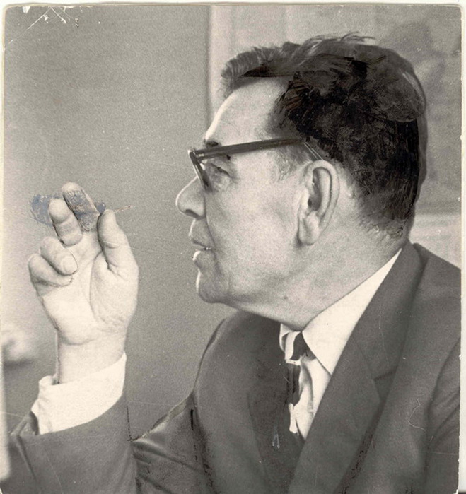
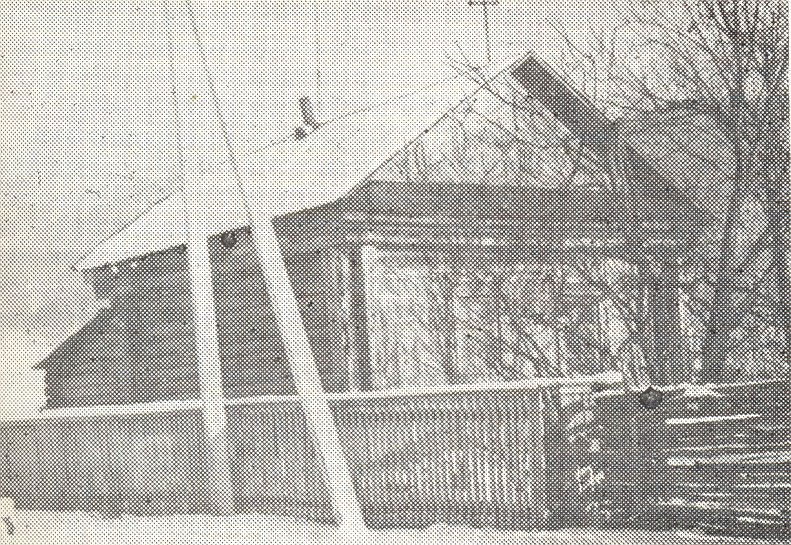
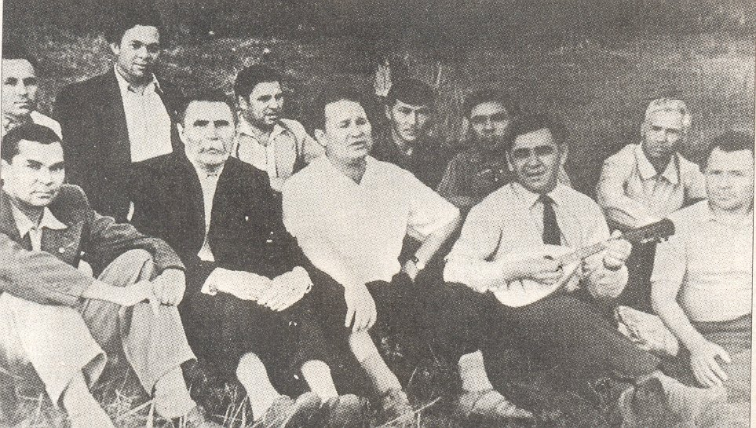
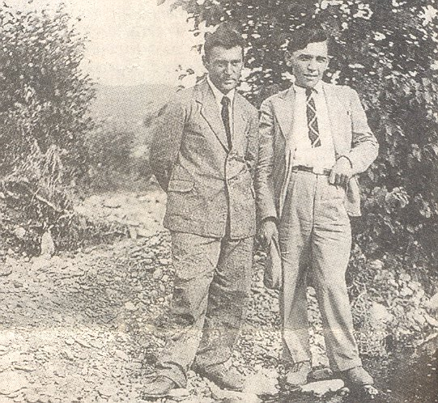
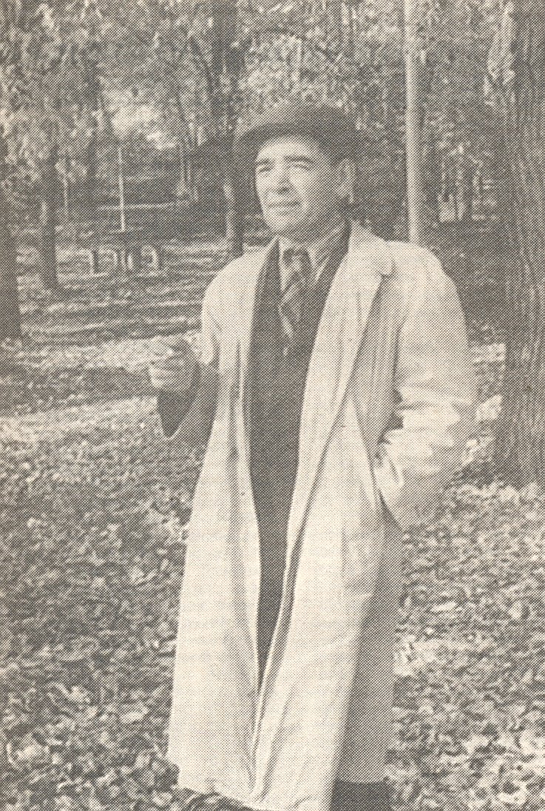
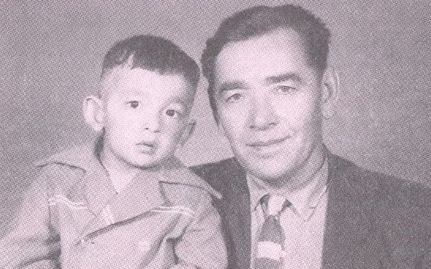
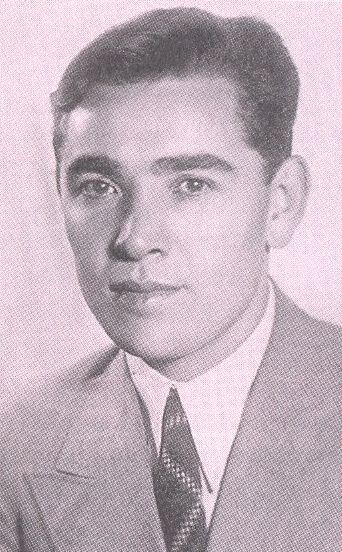
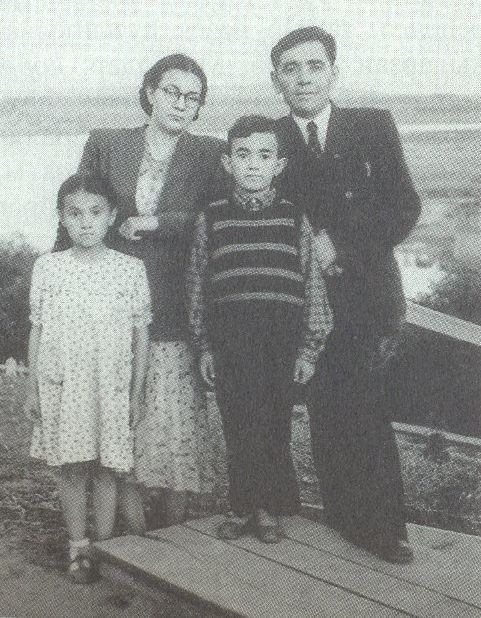
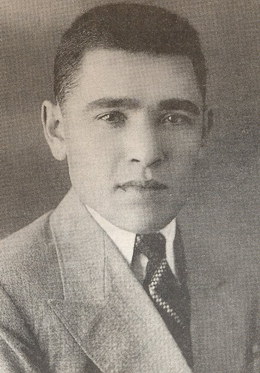

Фотогалерея / Киекбаев
Киекбаев
9 фотографий
Откройте фотографию, чтобы посмотреть оригинал.


















Фотогалерея / Киекбаев
9 фотографий
Откройте фотографию, чтобы посмотреть оригинал.








